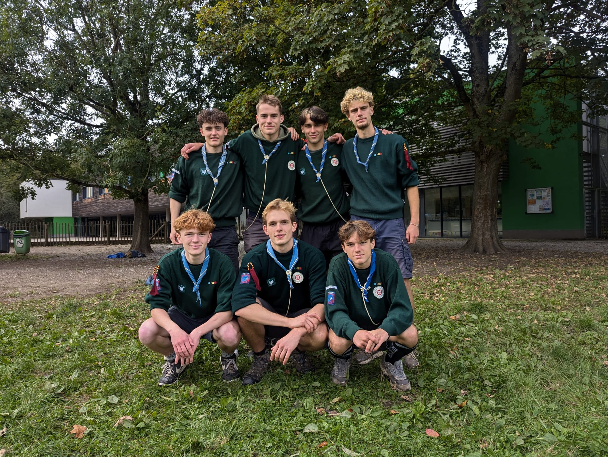

Voici la fabuleuse équipe du Rocher ! Toujours motivés pour faire vivre aux Louveteaux une année pleine d’aventures, de jeux et de souvenirs inoubliables.

Tegumaï
Chef 3e année – Criminologie à l’ULB
Akéla
Grand Chef – Ingénieur de gestion à louvain-la-neuve
Bagheera
Chef 2e année – Ingénieur de gestion à Saint-Louis
Jakala
Chef 2e année – Kiné à louvain-la-neuve
Tabaki
Chef 1ère année – A fini ses secondaires a Mater dei
Sona
Chef 2e année – Ingénieur civil à louvain-la-neuve
Sahi
Chef 2e année – Ingénieur de gestion à louvain-la-neuve